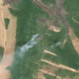
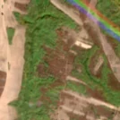

15,0 ha de pădure schimbată lângă Povârgina
Între 3 august 2026 și 8 august 2026, pe aproximativ 15,0 ha de pădure din orașul Făget, lângă Povârgina, județul Timiș, imaginile Sentinel-2 arată că vegetația a dispărut sau s-a schimbat puternic. Nu pare o tăiere de lemn.
Autorizația de tăiere
nu e tăiere de pădure
Schimbarea nu pare tăiere de lemn, așa că autorizațiile de tăiere nu se aplică. Analistul AI vede urme de foc, nu de tăiere.


Înainte și după: Copernicus Sentinel-2, 10 m pe pixel, conturul zonei cu portocaliu. Poza detaliată (Esri World Imagery) e de acum 1–4 ani: arată ce era acolo înainte, nu tăierea.
Pe scurt
- Identificator
- 20260808_45878_22119
- Locul
- Povârgina, orașul Făget, județul Timiș (SIRUTA 156801)
- Coordonate (centru)
- 45.87763, 22.11865 · Google Maps · OpenStreetMap
- Suprafața
- 15,0 ha (din pixeli de 10 m; ± câțiva pixeli pe margine)
- Ultima imagine cu pădurea întreagă
- 3 august 2026
- Prima imagine cu schimbarea
- 8 august 2026
- Imagini în care se vede schimbarea
- 12
- Cât de sigur e semnalul din satelit
- ridicată
- Autorizația cea mai apropiată
- APV 2400141201200 · Ocolul Silvic Făget, valabilă 5 septembrie 2024 – 27 decembrie 2024, la 321 m de zonă
- Terenul
- în afara amenajamentelor silvice publicate (pășune, mal de apă sau pădure privată fără amenajament în registru)
- Garda Forestieră
- Timișoara
Dacă vrei să verifici sau să sesizezi
- Pădurile din județul Timiș sunt în grija Gărzii Forestiere Timișoara, care controlează tăierile și dă amenzile.
- Autorizația găsită în zonă e emisă de Ocolul Silvic Făget.
- Formularul Gărzii Forestiere Naționale primește sesizări și fără nume. Trimite linkul acestei pagini, coordonatele și pozele. Dacă tăierea e în desfășurare, sună la 112.
- Autorizațiile și transporturile de lemn se pot căuta în Inspectorul Pădurii.
Pagina arată ce se vede din satelit și ce scrie în registrul public; nu e o dovadă în sine.
Cum citezi zona
Linkul acestei pagini nu se schimbă. Dacă zona iese vreodată de pe hartă, pagina rămâne, cu data și cu ce știam despre ea.
Pădurea RO, zona 20260808_45878_22119: 15,0 ha, Povârgina, orașul Făget, județul Timiș; schimbare văzută din satelit între 3 august 2026 și 8 august 2026. https://iliemihai.github.io/padurea-ro/zona/20260808_45878_22119/ (consultat la [data]). Date: CC BY 4.0.
Datele zonei: GeoJSON · toate zonele: date deschise · licența CC BY 4.0.
Istoricul zonei pe hartă
Starea se poate schimba când registrul publică o autorizație sau când analistul vede poze mai bune. O ținem aici, ca un link citat să arate și ce spuneam atunci.
Pe hartă cel târziu din 5 noiembrie 2026.
- 5 noiembrie 2026 – azi · nu e tăiere de pădure
Detalii tehnice, pentru verificare
De ce acest nivel de încredere:
- văzută schimbată în 12 imagini diferite
- peste 3 ha
- AI-ul vede o zonă arsă
- în poze, zona se schimbă vizibil față de pădurea din jur
- Placa Sentinel-2
- 34TER
- NDVI de referință
- 0.85
- NBR de referință
- 0.62
- Scăderea în pădurea din jur
- 0.1
- Persistență
- 0.96
- NDVI / NBR după
- 0.441 / 0.056
- Analistul de zi (model)
- incendiu · 0.8 · claude-haiku-5-5
Cum se calculează fiecare: metodologia.
Pune harta zonei într-un articol
Copiază codul în articol (merge în majoritatea site-urilor de știri). Sau pune doar linkul: WhatsApp, Facebook și X arată singure poza zonei.